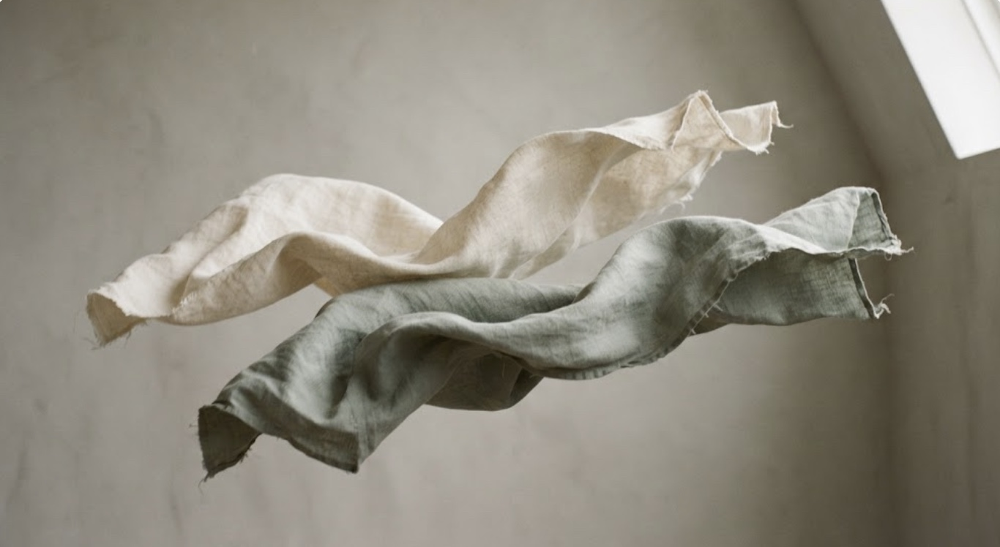
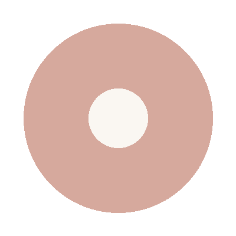
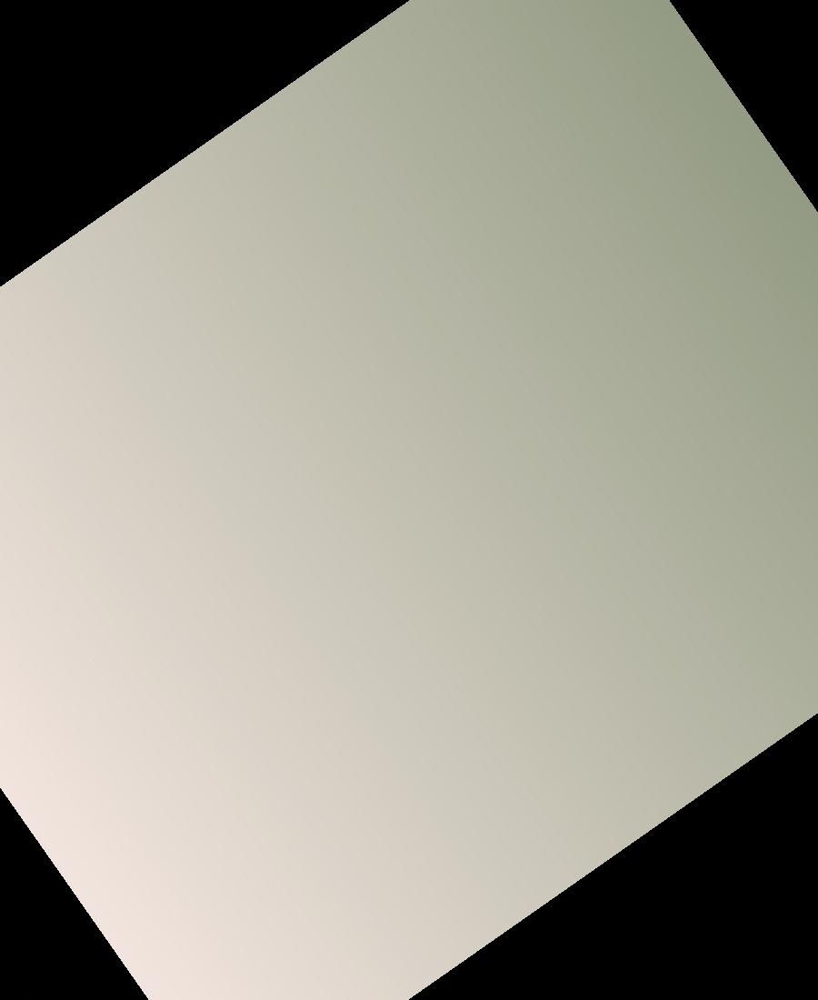
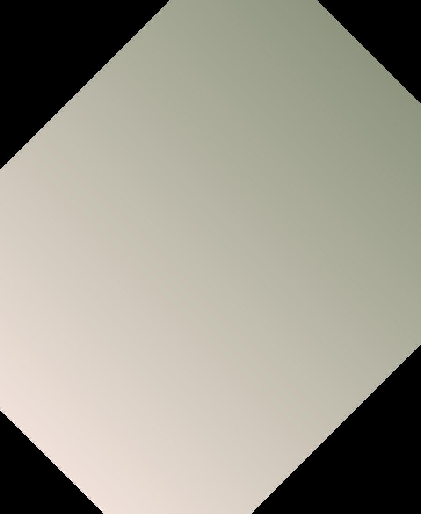
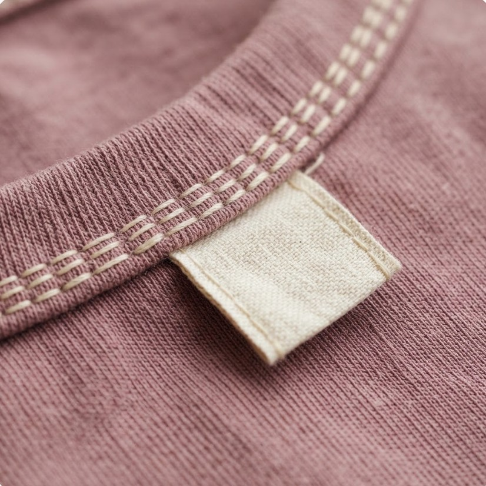
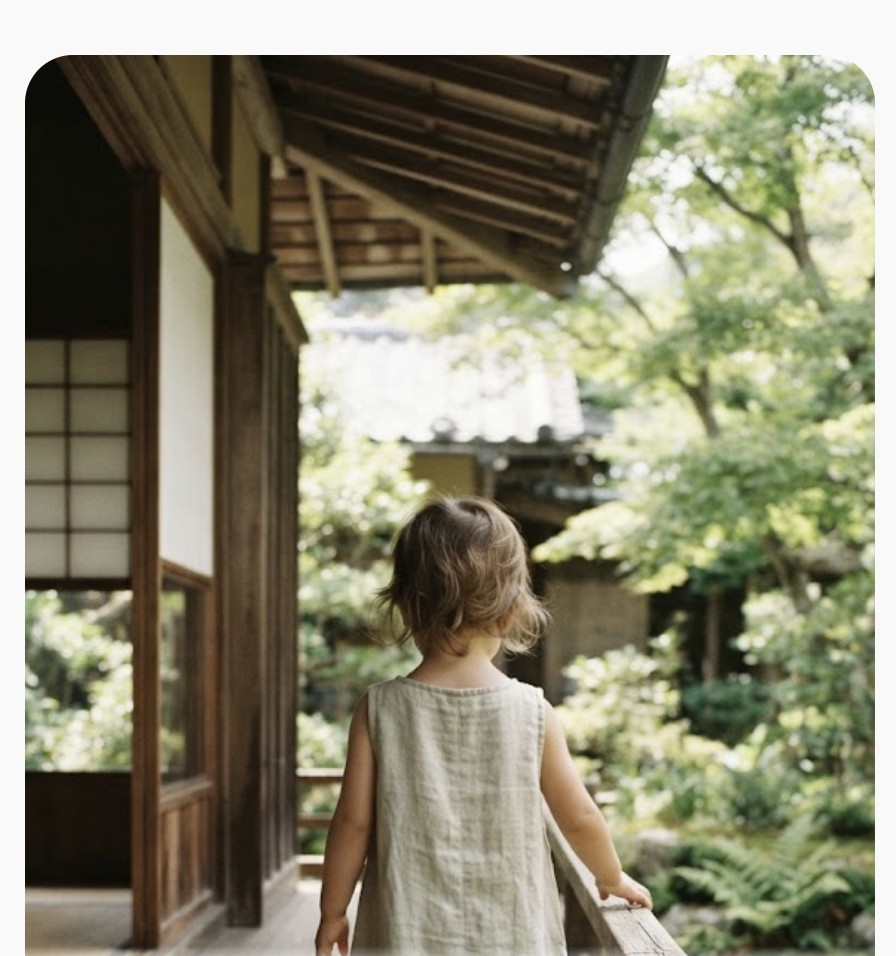
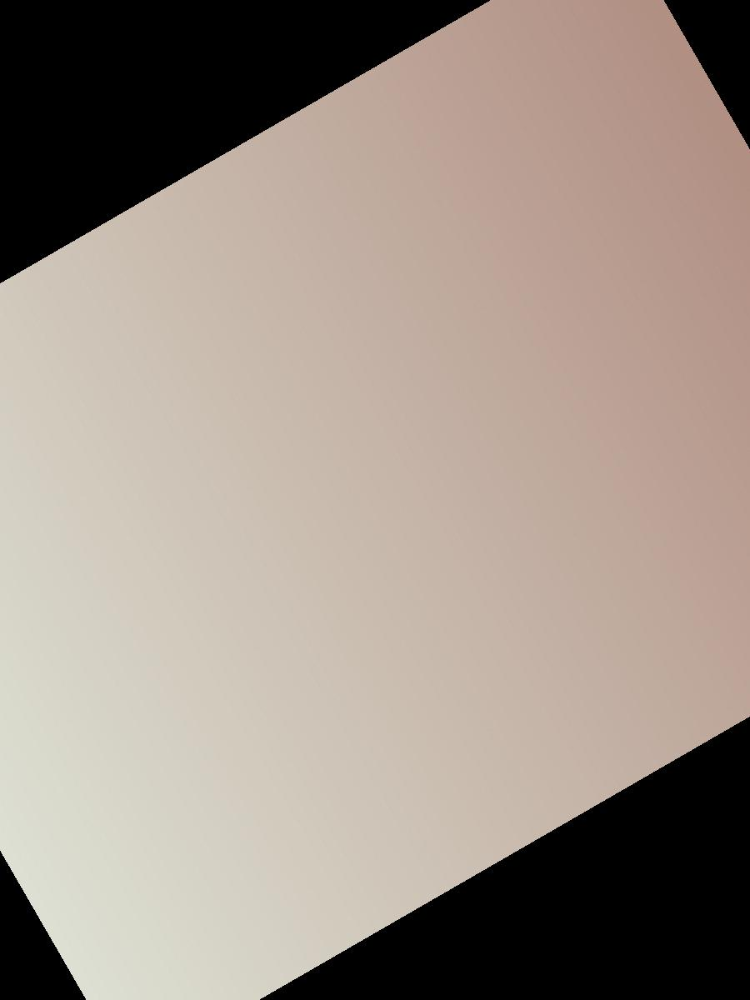

Cloud Cardigan
オーガニックコットン100% ／ ¥8,800


LOOKBOOK — 2026 AUTUMN
オーガニックコットン100% ／ ¥8,800
リネン55% コットン45% ／ ¥9,600

オーガニックコットン100% ／ ¥2,200

リネン100% ／ ¥5,200
CRAFT & MATERIAL
LINEN CLOUDは、フランス・ノルマンディー産のリネンと、 インド・グジャラート州のオーガニックコットンだけを使います。 染色は植物由来の顔料で、生地は洗うほどに柔らかくなるように織り方から設計しました。 「見た目のかわいさ」より先に、肌に触れた瞬間の心地よさを決めてから、色と形を選んでいます。
DETAILS

ステッチの間隔は3.2mm。タグは縫い付けず、外から取り外せる仕様にしています。
GALLERY


「一歳の子が肌をかいていたのが、リネンの服に替えてから落ち着きました。」
— M.K様(1歳児の保護者)
「出産祝いに贈って、とても喜ばれました。色が主張しすぎないのがいいです。」
— S.T様(ギフト購入)
「洗うほど柔らかくなるのが本当でした。3歳になった今もお気に入りです。」
— A.N様(3歳児の保護者)
STOCKISTS